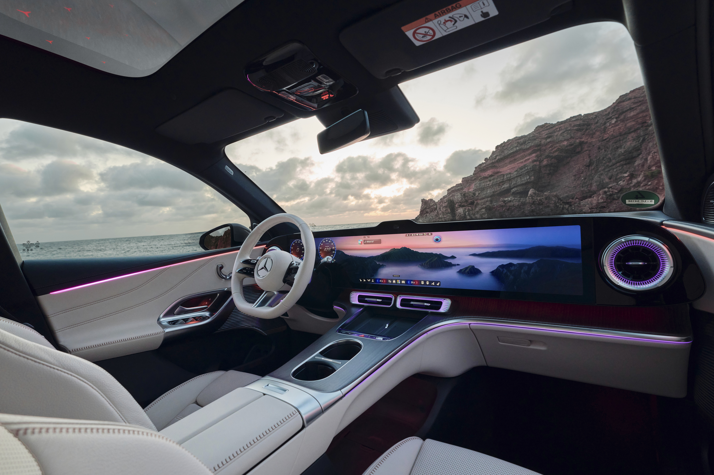
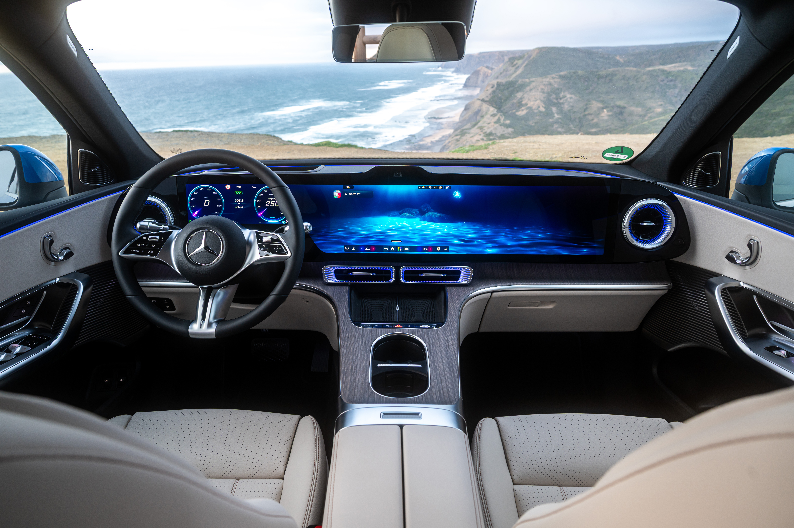
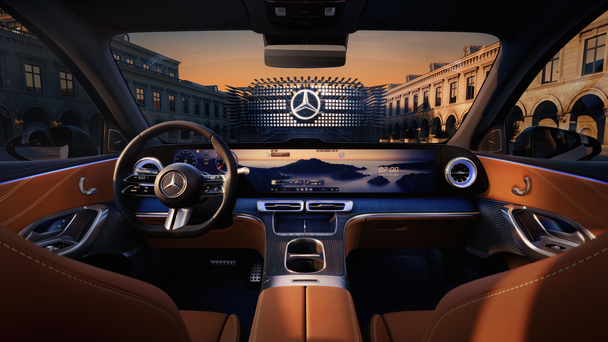

当全球设计遇到本土用户，下一代座舱该如何定义？
中国市场的车机体验已经被新势力拉到了很高的基准线。用户对 AI 对话、主动推荐、大屏交互的期望远超欧洲市场。纯电 GLC 搭载了全新的长联屏硬件，需要基于这块屏幕为中国用户定义一套有竞争力的系统级交互，不是欧版汉化，而是从底层逻辑开始为中国市场重新设计。
长联屏分区 × AI 系统级交互
长联屏最核心的课题是分区逻辑。这不是简单一分为二的双屏，而是一块可以动态调配的完整屏幕。
当驾驶员独自使用时，系统增加主驾内容占比提高屏幕利用率。副驾有乘客坐下后，系统感知变化在副驾区域增加轻交互入口。两人同时使用时，屏幕比例动态调整确保双方任务互不干扰。
主页基于用户 Profile 做了个性化分层：偏好纯粹驾驶的用户看到车身、动力等核心数据；重导航用户看到 3D 地图；日常通勤型用户看到沉浸式音乐桌面。
AI 是另一个核心方向。我们把 App 通知、主页 Dock 推荐、AI 主动推荐和 LLM 对话流整合进同一容器，用户不需要去找"AI 助手在哪里"，它就在系统最自然的位置。难点在于处理 AI 区域和多任务场景的切换：听音乐时来了 AI 推荐怎么办？通话中 AI 区域如何收起？这些需要定义清楚的优先级和退让规则。

动态分区与 AI 退让规则
交互上最核心的是长联屏的动态分区。它不是固定比例，而是基于乘客感知和使用状态智能调整，要做到"用户感觉不到系统在调"的程度。
AI 容器的设计逻辑是聚合而非堆砌：通知、推荐、对话三种完全不同性质的内容共存于一个区域，需要清晰的信息层级和切换节奏。我们定义了 AI 区域在不同场景下的退让规则：接电话时自动最小化、音乐全屏时平滑过渡、导航优先时让出空间。

视觉表达
长联屏的过渡动效是关键，分区比例变化不能突兀，需要自然流动的动态感。三种 Profile 主页有明确的视觉差异：驾驶数据页偏硬朗精确、3D 地图页偏空间感、音乐桌面偏沉浸柔和。AI 容器采用统一的视觉语言，和不同 Profile 主页都能协调共存。
